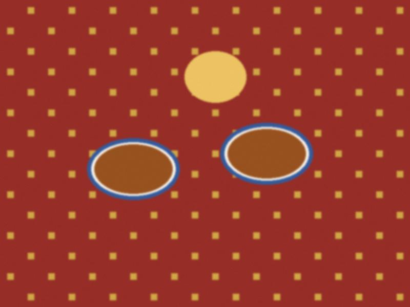
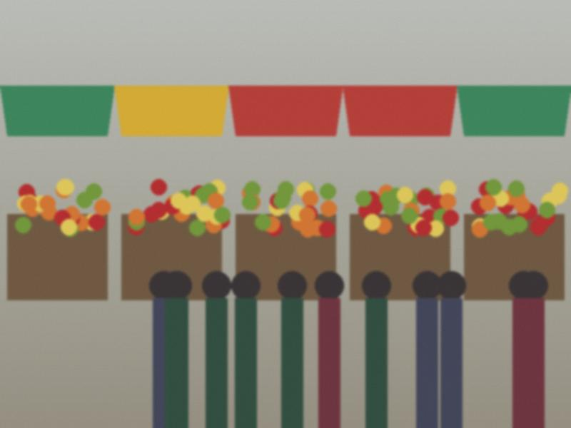
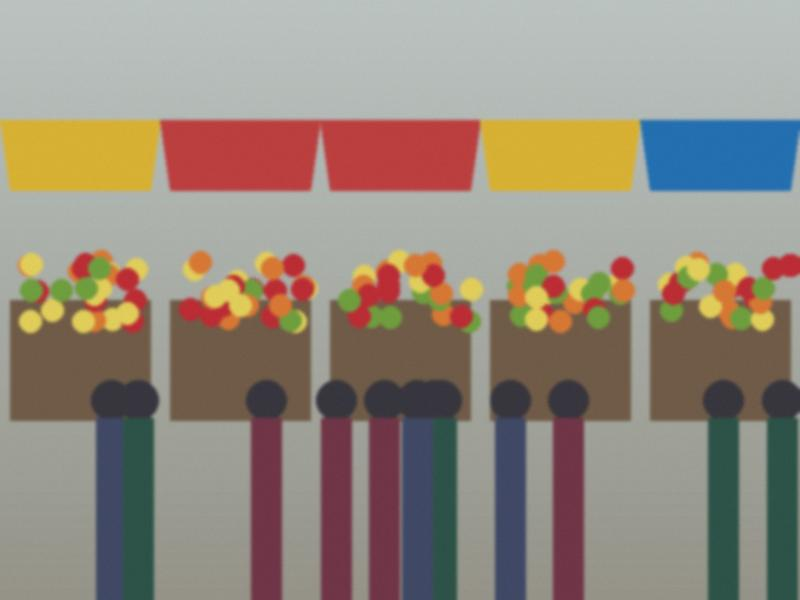
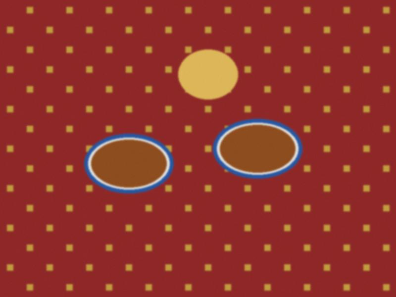
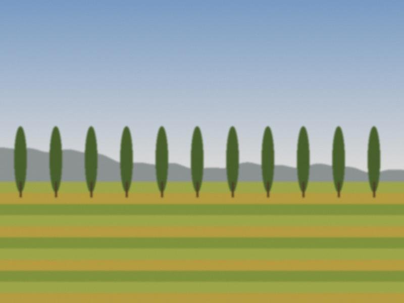
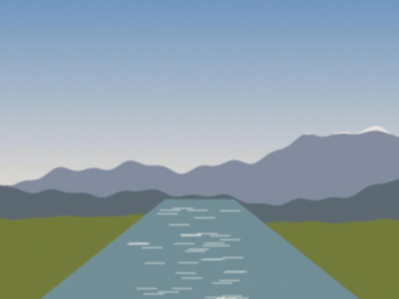
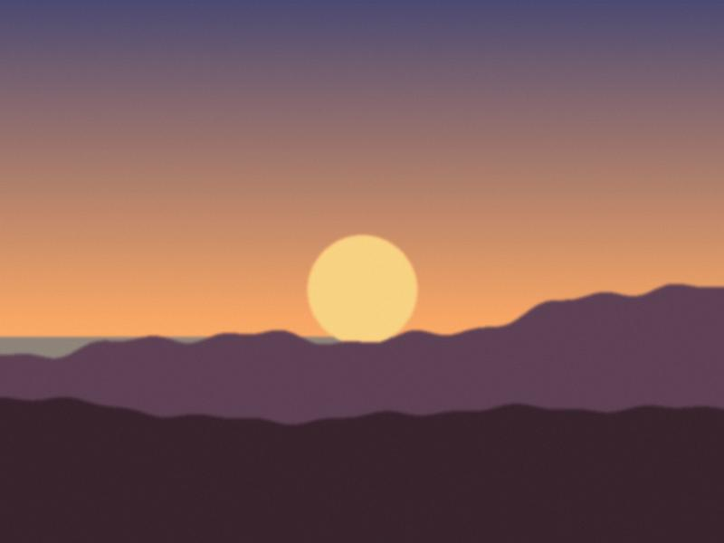

Archive for the ‘photos’ Category
went on the weekend with my cousin and her husband, who drove. five hours with three stops. at the second stop an old woman gave us an apricot each and wouldn't take money. "you're too thin," she said, to me. i told her it was the camera that made me look thin. she said: "it's a lie."
 the old cinema, tuesday evening. mr mamatov turning the motor of the second projector by hand.
the old cinema, tuesday evening. mr mamatov turning the motor of the second projector by hand.the paper sent me with daniyar osmonov, who wrote the long story about the projectionist (his blog is Long Way Round, here on kündölük). he writes slowly and he is very polite. he asked mr mamatov if i could take a photograph from the corner of the booth where the light from the window falls on the lens.
mr mamatov said: "only if you take your shoes off." we all took our shoes off. there's no film for the projectors anymore, but the floor of the booth is still treated like a place where something is shown.
 the talas in spring. loud. you can hear it from the road.
the talas in spring. loud. you can hear it from the road. the stalls by the opera. red roses for 20 som each, wrapped in cellophane. nobody was buying. everyone was looking.
the stalls by the opera. red roses for 20 som each, wrapped in cellophane. nobody was buying. everyone was looking.the girls at the paper say the day is "for those who have somebody". i said: i have a camera. they laughed. then the photo editor said: "that's the correct answer".
third roll. i've started to write on the edge of each strip what the frame was supposed to be. next to the mountains i wrote "calm". when the prints came back it said "calm" on the strip and the picture was something else. i kept it.

the table. grandmother's cups, my cups, one cup that nobody knows whose it is.the cup that nobody knows whose it is turned out to be my great uncle's. he died in 1992. grandmother kept it. we drank from it, in turns, and said nothing.
i've decided to photograph all the bus stops on line 4. there are 31. i've done 11. each one has something: a graffiti, a dog, an old man selling seeds. this is a map of the city from below.
 not really snow, the pass at 3,000 m on a trip with the photo club. it was snowing up there. in august.
not really snow, the pass at 3,000 m on a trip with the photo club. it was snowing up there. in august. grandfather's Zenit. old city, saturday. i learned to measure the light with my hand.
grandfather's Zenit. old city, saturday. i learned to measure the light with my hand.36 frames, 29 came out. the man at the photo shop said: "you're improving." he said it like he was disappointed.
 8 march. the whole city smells like tulips and car exhaust.
8 march. the whole city smells like tulips and car exhaust. the first real snow. the bus stop by the bridge. the quote on the wall is still there, under a thin layer of white.
the first real snow. the bus stop by the bridge. the quote on the wall is still there, under a thin layer of white.some days the mountains are enough. other days the snow on the bench is enough. i wonder how much light a person needs, in total.
 grandfather's Zenit, first roll. everything is a bit blue and a bit wrong and i love it.
grandfather's Zenit, first roll. everything is a bit blue and a bit wrong and i love it.36 frames, 22 came out. the man at the photo shop said nobody brings film any more, he had to find the chemicals.

bazar-i kalan before the sellers open the shutters. the cats own it for another ten minutes.went with the club at dawn. the best light is before anyone is there. the second best is when the first woman arrives with her scales.
 the corridor of the regional hospital. a mother's hands on a bag. i asked first. she said yes and then looked away.
the corridor of the regional hospital. a mother's hands on a bag. i asked first. she said yes and then looked away.i went with my big sister's friend, the doctor. she's in her first year on the wards and she works nights. she let me sit in the corridor for two hours with the camera in my bag while she worked.
i took one photograph and put the camera away. some rooms don't want to be seen. they want you to sit.

bazar-i kalan on sunday. the apricot sellers are back.the old city before noon is the best light in talas. after noon it's just dust.
i bought a bunch for my grandmother and she put them in a jug with a crack. "flowers like cracked things," she said.

grandmother's red tablecloth. she said "why are you photographing the cups, photograph me". next time, apa.
grandmother's tree in the village. the last leaf was holding on with both hands.she said: you have photographed that tree since you were nine. what is new? i said: nothing. that's why.

the talas below the bridge. boys jumping from the pillar. i was not brave enough to go closer.exams done. ten days of nothing. i'm going to photograph one thing a day. i'll tell you on day three how it went.

evening from the ninth floor. first post from my phone.kündölük finally lets you post from the phone. so here i am.